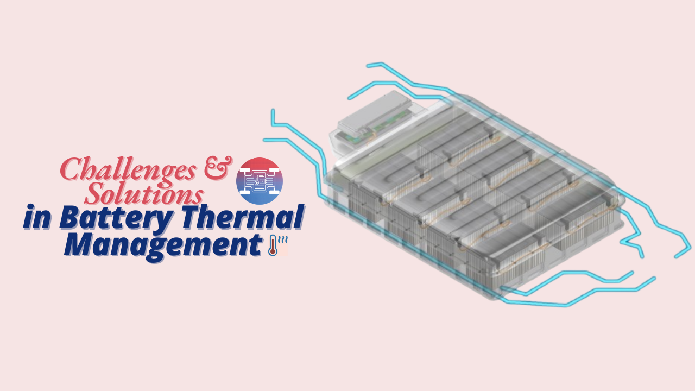
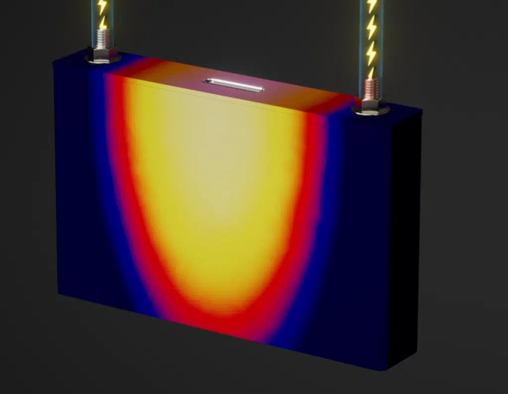
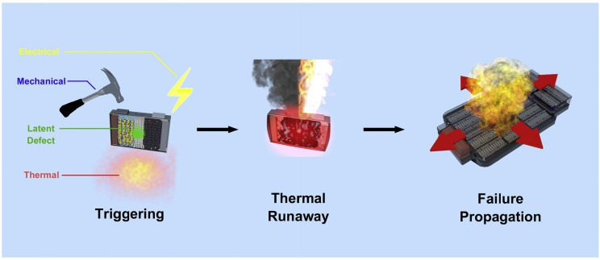
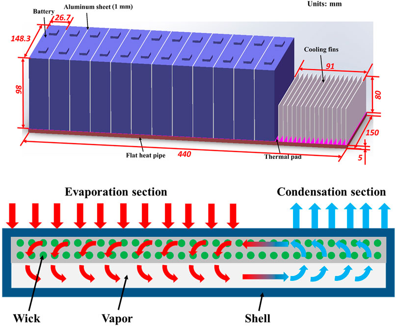
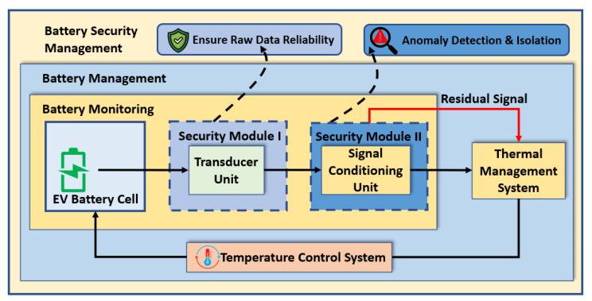
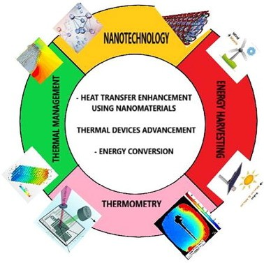

Introduction
Battery thermal management has become a cornerstone of modern technology, influencing everything from electric vehicles to smartphones. With the growing demand for high-performance, energy-efficient, and safe batteries, addressing thermal challenges is no longer optional. This article delves into the critical challenges of battery thermal management and explores innovative solutions shaping the future.
Why is it Critical in Batteries?
Temperature directly affects a battery's performance, lifespan, and safety. Overheating can lead to thermal runaway—a dangerous chain reaction causing fires or explosions. Similarly, operating in cold environments reduces a battery’s efficiency and energy capacity. Maintaining a stable temperature is essential for reliable and safe energy storage.

Key Challenges in Battery Thermal Management
1. Temperature Extremes:
- High Temperatures: Operating temperatures above 40°C can lead to irreversible damage, while temperatures between 70°C and 100°C pose a risk of thermal runaway, which can cause fires or explosions.
- Low Temperatures: At temperatures below 0°C, electrochemical reactions slow down, leading to decreased power output and potential battery damage during charging.

2. Uneven Temperature Distribution:
Variability in temperature across battery cells can result in inconsistent performance and accelerated aging. This issue is exacerbated during high-power charging and discharging cycles, where some cells may overheat while others remain cold.
3. Thermal Runaway Risks:
The phenomenon of thermal runaway is a significant safety concern, particularly in high-performance applications. It can initiate a chain reaction that not only damages the affected cell but also spreads to neighboring cells, jeopardizing the entire battery pack.

4. The complexity of Thermal Management Systems (TMS):
Designing an effective Battery Thermal Management System (BTMS) that can adapt to varying operational conditions while maintaining optimal temperature ranges is inherently complex. This includes balancing the need for heating in cold environments and cooling in hot conditions.
Innovative Solutions
Active and Passive Cooling Technologies:
- Liquid Cooling Systems: These systems utilize coolant to transfer heat away from battery cells efficiently. Liquid cooling is effective but requires careful design to mitigate risks such as leaks
- Air Cooling Systems: Simpler than liquid systems, air cooling uses airflow to dissipate heat. While less efficient, it is easier to implement and maintain.
Advanced Materials and Designs:
The integration of new thermal interface materials can enhance heat transfer between battery components and cooling systems. Additionally, innovative battery designs that optimize heat dissipation paths are being explored to improve overall thermal management.

Thermal Insulation Materials
Materials like aerogels and thermal pads help contain heat within safe limits. These materials prevent heat transfer to sensitive components, improving safety and efficiency.
Heat Pipes and Phase-Change Materials
Heat pipes use liquid-vapor phase transitions to transfer heat efficiently, while phase-change materials absorb and release heat during temperature fluctuations. These technologies are gaining traction in EVs and portable electronics.

Thermal Sensors and Monitoring Systems
Real-time temperature monitoring ensures batteries remain within optimal conditions. Smart sensors and IoT integration allow predictive maintenance, enhancing reliability and safety.
Design Optimization and Simulation:
Computational simulations enable engineers to model thermal behavior under various scenarios. This helps optimize designs and predict potential issues before implementation.

Research into Nanomaterials:
Emerging research on nanomaterials promises significant improvements in thermal conductivity and heat dissipation capabilities for future battery technologies. These advancements could lead to lighter, more efficient thermal management solutions.

Case Studies in Effective Thermal Management
Electric Vehicle Batteries: Electric vehicles (EVs) are perhaps the most well-known example of advanced battery thermal management. Companies like Tesla have revolutionized thermal systems with liquid cooling technologies that maintain optimal battery temperatures even under high loads. For instance, Tesla's battery packs use an intricate network of liquid coolant loops, ensuring uniform temperature distribution. This approach not only enhances battery life but also improves vehicle performance.
Other EV manufacturers employ similar techniques, such as active cooling and integrated thermal sensors. The lessons learned from these innovations are being applied across industries to refine thermal solutions for high-energy systems.
Conclusion
As the demand for electric vehicles continues to rise, addressing the challenges of battery thermal management becomes increasingly critical. By leveraging advanced technologies, materials science innovations, and intelligent system designs, the industry can enhance battery performance, safety, and longevity. Continued research and collaboration among various disciplines are essential to develop robust solutions that meet the evolving needs of electric mobility.
This newsletter aims to keep stakeholders informed about ongoing challenges and solutions in the field of battery thermal management, fostering a collaborative approach toward innovation in this vital area of technology.